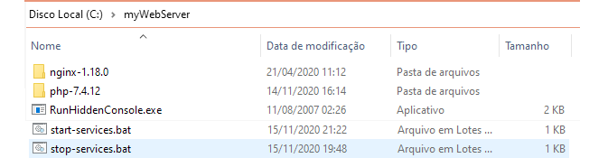

Bludit CMS | Artigos
PHP + NGINX Separados e configuração para o funcionamento do BLUDIT CMS
Neste artigo você irá prepara o ambiente do PHP + NGINX para utilização no BLUDIT CMS no Windows 10
Primeiro baixe os arquivos e descompacte-os.
RunHiddenConsole
PHP 7.4.12
NGINX 1.18.0
Stop/Start
Crie a pasta C:\myWebServer\ e depois mova as pastas/arquivos para ela deixando conforme abaixo.

Clique com o botão direito em cima dos links - PHP.INI e NGINX.CONF - e clique em Salvar Link Como (Save Link As).
Depois mova o php.ini para C:\myWebServer\php-7.4.12 e o nginx.conf para C:\myWebServer\nginx-1.18.0\conf.
Para iniciar/startar utilize os scripts disponibilizados na pasta. Após clicar em start-services.bat acesse o navegador para verificar se o servidor está OK.
Suas aplicações e scripts PHP devem ser colocados em C:\myWebServer\nginx-1.18.0\html.
Com essas configurações você pode baixar o Bludit CMS e instalar.
Passo a passo no vídeo.
Outras informações
https://www.nginx.com/resources/wiki/start/topics/examples/phpfastcgionwindows/
https://windows.php.net/download/
Dicas de segurança
Simples
Após a instalação vá em Administrar->Usuários->Adicionar Novo Usuário e no campo usuário insira um nome bem diferente ao qual será utilizado apenas para administrar o BLUDIT (gerenciar usuários, plugins, temas, categorias e configurações básicas).
Vá em Administrar->Usuários clique em admin depois na aba Segurança e pressione o botão Desativar usuário. Para habilitá-lo novamente basta alterar a senha.
Recomendado para senhas: use no mínimo 8 caracteres contendo maiúsculas, minúsculas, números e caracteres especiais. Caso tenha dificuldades sugiro utilizar um gerador de senhas. Troque a senha algumas vezes ao ano.
Crie um novo usuário com função Autor ou Editor para gerenciar seus artigos (crie mais de um usuário dessas funções caso queira). Lembre-se de preencher as informações de apelido e nome diferentes do nome do usuário para que não tentem invadir seu sistema pois alguns temas mostram o nome de quem publicou o conteúdo.
Remova os arquivos de instalação install.php e o arquivo LICENSE.
Habilite o certificado de segurança na sua hospedagem - se não quiser pagar por um, contrate uma hospedagem que venha com Let's Encrypt.
Avançada
Edite o arquivo /bl-kernel/security.class.php e localize:
private $dbFields = array(
'minutesBlocked'=>5,
'numberFailuresAllowed'=>10,
'blackList'=>array()
);
Em minutesBlocked altere o número 5 para o tanto de minutos de bloqueio de IP desejado.
Em numberFailuresAllowed altere o 10 para o número de falhas permitidas.
Altere a URL do painel de administração ao qual tem o padrão http://seuSite.com/admin, edite o arquivo /bl-kernel/boot/variables.php e substitue o valor admin localizado em define('ADMIN_URI_FILTER', 'admin') para o valor desejado, por exemplo, acesso-restrito então acesse o painel como http://seuSite.com/acesso-restrito.
Outras opções seriam alterar a estrutura das pastas e editar os arquivos de configuração. Renomeia as pastas bl-* e depois substitua os valores pela URL nova em /index.php e também em bl-kernel/boot/init.php.
Os servidores web Apache e NGINX são os mais utilizados atualmente, portanto escolher uma hospedagem com um menos conhecido também ajuda na proteção.
Algumas hospedagens permitem a edição do php.ini, então desative alguns recursos colocando o valor para 'off' como em "display_errors=Off" e nos demais: expose_php, register_globals, magic_quotes_gpc e allow_url_include.
Sempre utilize versões do PHP recentes ( pelo menos da 7.2 em diante ).
Outras dicas de segurança podem ser verificadas no links: lista de segurança do PHP, configurações do PHP.INI e ocultar cabeçalhos HTTP.